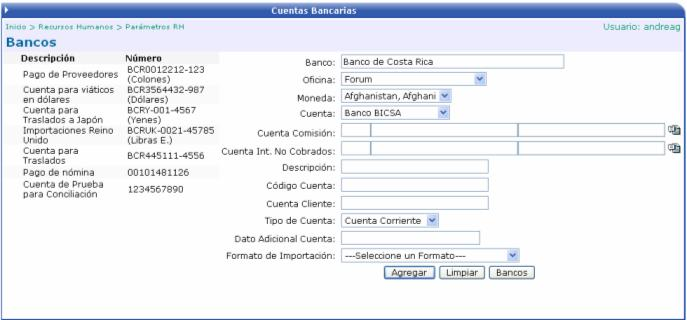
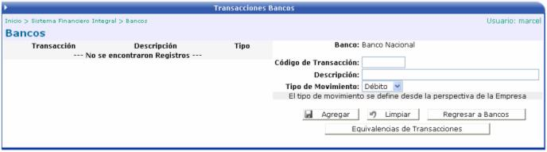

Crea los diferentes Bancos, con los que trabaja la compañía para el pago de nóminas. Se debe de llenar la información básica del Banco, como el nombre, la dirección, el teléfono, el fax, etc.:
Una vez creado el banco, se procede a asociarle
los números de cuentas bancarias. Para esto se debe de presionar el botón


Cuenta: es el nombre de la cuenta sobre la cual se hace la transferencia del pago de planilla. Esto es por si la empresa tiene más de una cuenta en el mismo banco, entonces se le especifica sobre cual se debe de hacer el movimiento.
Código Cuenta: es un campo informativo, que describe la cuenta.
Cuenta Cliente: a nivel bancario existe un número de cuenta cliente para cada banco. Dicho número identifica a cada banco, con respecto al Banco Central.
También se debe de asociar las diferentes
transacciones que realiza el banco y que serán usadas en por el módulo
de Bancos. Para esto se debe de presionar el botón 

El botón de  sirve para incluir equivalencias de transacciones por banco,
ya que puede darse el caso que el sistema maneje una codificación diferente
a la codificación que manejan los bancos para las transacciones.
sirve para incluir equivalencias de transacciones por banco,
ya que puede darse el caso que el sistema maneje una codificación diferente
a la codificación que manejan los bancos para las transacciones.